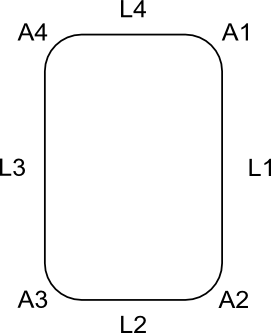

Scripted Parts: Ball Bearing - Part 2/fr
| Thème |
|---|
| Part Tutoriel écrire un script - Roulement à bille #2 |
| Niveau |
| Débutant |
| Temps d'exécution estimé |
| 30 min |
| Auteurs |
| r-frank |
| Version de FreeCAD |
| 0.16.6706 |
| Fichiers exemples |
| None |
| Voir aussi |
| Part Tutoriel écrire un script - Roulement à bille #1 |
Introduction
Ce tutoriel est destiné à initier les débutants à la création de pièces à l'aide de scripts Python dans FreeCAD. Il explique comment créer un roulement à billes en suivant un processus consistant à créer des esquisses puis à les faire tourner. Le code générera un nouveau document FreeCAD contenant 12 formes (bague intérieure, bague extérieure et 10 billes/sphères).
Voici à quoi cela ressemblera :
{kind=link}
Flux de travail
La procédure est plus ou moins identique à celle que vous suivriez pour créer la pièce dans l'atelier PartDesign. Il n'y a que quelques petites différences.
- Créez un nouveau document vide et sélectionnez-le comme document actif.
- Dessinez la forme de base de la bague extérieure composée de quatre lignes droites et de quatre arcs.

. - Reliez les lignes et les arcs, puis convertissez-les en une seule polyligne.
- Convertissez la polyligne en face.
- Effectuez une rotation de la face pour obtenir une forme.
- Tracez un cercle.
- Convertissez le cercle en polyligne.
- Convertissez la polyligne en face.
- Effectuez une rotation de la face et appliquez une découpe booléenne pour obtenir une rainure dans la bague extérieure.
- Tracez la forme de base de la bague intérieure, composée de quatre lignes droites et de quatre arcs.
- Reliez les lignes et les arcs, puis convertissez-les en une seule polyligne.
- Convertissez la polyligne en face.
- Faites tourner la face pour obtenir une forme.
- Tracez un cercle.
- Convertissez le cercle en polyligne.
- Convertissez la polyligne en face.
- Faites tourner la face et appliquez une découpe booléenne pour obtenir une rainure dans l’anneau intérieur.
- Insérez des sphères en suivant le même processus que dans la partie 1 (pour des raisons d’efficacité).
- Réglez la vue sur axométrique.
- Zoomez pour tout afficher.
{kind=link}
Concevoir la rainure
Pour tracer un arc, il faut soit trois points, soit un angle de départ et un angle de fin. Dans l'outil d'esquisse, on utiliserait des contraintes pour définir le point de départ et le point d'arrivée de l'arc. Comme cela n'est pas possible en script, on dessine un rectangle arrondi et on le fait tourner pour obtenir une « forme d'anneau » de base. Ensuite, on dessine un cercle et on le fait tourner pour obtenir la géométrie de la rainure. Enfin, on applique une opération de découpe booléenne aux deux formes obtenues par rotation, ce qui permet d'obtenir la forme complète de l'anneau intérieur/extérieur.
Insérez les billes
Insérez les billes
Le flux de travail approprié basé sur sketcher (l'esquisseur) pour insérer les billes serait :
- Tracez un arc (demi-cercle) dont le centre est identique à l'origine et tracez un segment fermant le côté "ouvert" de l'arc
- Convertissez les deux éléments en un contour, transformez le en face, tournez autour de l'axe z pour obtenir une forme de boule
- Utilisez la commande "translate" (traduire) pour déplacer la bille dans la bonne position
- Répétez les étapes ci-dessus neuf fois, en utilisant la fonction mathématique pour créer et positionner les autres billes
- Cette opération répétitive peut être programmée avec une boucle
Maintenant, ce n'est pas efficace, insérer des primitives et les positionner est plus facile et plus rapide dans ce cas.
Nous utilisons donc la même méthode que dans "Objets scriptés "Part" : Roulement à billes - Partie 1".
Now this is not effective, inserting primitives and positioning them is easier and faster in this case. So we use the same method as in Scripted Parts: Ball Bearing - Part 1.
Links
Liens
Objets créés par script : La page wiki expliquant les bases du langage de script
Scripts pour création topologique : Un tutoriel qui couvre les bases de la création de scripts
Objets scriptés "Part" : Roulement à billes - Partie 1 : Le faire avec des esquisses
Bearings from scripted sketches : Base utilisée pour ce tutoriel, grâce à JMG ...
Code
## Ball-bearing script
## 11.08.2016 by r-frank (BPLRFE/LearnFreeCAD on Youtube)
## based on ball bearing script by JMG
## (http://linuxforanengineer.blogspot.de/2013/12/bearings-from-scripted-sketches.html)
#
#needed for doing boolean operations
import Part
#needed for calculating the positions of the balls
import math
#needed for translation and rotation of objects
from FreeCAD import Base
#
#VALUES#
#(radius of shaft/inner radius of inner ring)
R1=15.0
#(outer radius of inner ring)
R2=25.0
#(inner radius of outer ring)
R3=30.0
#(outer radius of outer ring)
R4=40.0
#(thickness of bearing)
TH=15.0
#(number of balls)
NBall=10
#(radius of ball)
RBall=5.0
#(rounding radius for fillets)
RR=1
#first coordinate of center of ball
CBall=((R3-R2)/2)+R2
#second coordinate of center of ball
PBall=TH/2
#
#Create new document
App.newDocument("Unnamed")
App.setActiveDocument("Unnamed")
#
#Lines for basic shape of outer ring
L1o=Part.makeLine((R4,0,TH-RR),(R4,0,RR))
L2o=Part.makeLine((R4-RR,0,0),(R3+RR,0,0))
L3o=Part.makeLine((R3,0,RR),(R3,0,TH-RR))
L4o=Part.makeLine((R3+RR,0,TH),(R4-RR,0,TH))
#Corner rounding for basic shape of outer ring
A1o=Part.makeCircle(RR,Base.Vector(R4-RR,0,RR),Base.Vector(0,1,0),0,90)
A2o=Part.makeCircle(RR,Base.Vector(R3+RR,0,RR),Base.Vector(0,1,0),90,180)
A3o=Part.makeCircle(RR,Base.Vector(R3+RR,0,TH-RR),Base.Vector(0,1,0),180,270)
A4o=Part.makeCircle(RR,Base.Vector(R4-RR,0,TH-RR),Base.Vector(0,1,0),270,360)
#Connect Lines and arcs to make wire and upgrade to face, revolve and apply cut to obtain groove
OR=Part.Wire([L1o,A1o,L2o,A2o,L3o,A3o,L4o,A4o])
OR=Part.Face(OR)
OR=OR.revolve(Base.Vector(0,0,1),Base.Vector(0,0,360))
C1=Part.makeCircle(RBall,Base.Vector(R2+(R3-R2)/2,0,TH/2),Base.Vector(0,1,0),0,360)
GRo=Part.Wire([C1])
GRo=Part.Face(GRo)
GRo=GRo.revolve(Base.Vector(0,0,1),Base.Vector(0,0,360))
OR=OR.cut(GRo)
Part.show(OR)
#
#Lines for basic shape of inner ring
L1i=Part.makeLine((R2,0,TH-RR),(R2,0,RR))
L2i=Part.makeLine((R2-RR,0,0),(R1+RR,0,0))
L3i=Part.makeLine((R1,0,RR),(R1,0,TH-RR))
L4i=Part.makeLine((R1+RR,0,TH),(R2-RR,0,TH))
#Corner rounding for basic shape of inner ring
A1i=Part.makeCircle(RR,Base.Vector(R2-RR,0,RR),Base.Vector(0,1,0),0,90)
A2i=Part.makeCircle(RR,Base.Vector(R1+RR,0,RR),Base.Vector(0,1,0),90,180)
A3i=Part.makeCircle(RR,Base.Vector(R1+RR,0,TH-RR),Base.Vector(0,1,0),180,270)
A4i=Part.makeCircle(RR,Base.Vector(R2-RR,0,TH-RR),Base.Vector(0,1,0),270,360)
#Connect Lines and arcs to make wire and upgrade to face, revolve and apply cut to obtain groove
IR=Part.Wire([L1i,A1i,L2i,A2i,L3i,A3i,L4i,A4i])
IR=Part.Face(IR)
IR=IR.revolve(Base.Vector(0,0,1),Base.Vector(0,0,360))
C2=Part.makeCircle(RBall,Base.Vector(R2+(R3-R2)/2,0,TH/2),Base.Vector(0,1,0),0,360)
GRi=Part.Wire([C2])
GRi=Part.Face(GRi)
GRi=GRi.revolve(Base.Vector(0,0,1),Base.Vector(0,0,360))
IR=IR.cut(GRi)
Part.show(IR)
#
#Balls#
for i in range(NBall):
Ball=Part.makeSphere(RBall)
Alpha=(i*2*math.pi)/NBall
BV=(CBall*math.cos(Alpha),CBall*math.sin(Alpha),TH/2)
Ball.translate(BV)
Part.show(Ball)
#
#Make it pretty#
App.ActiveDocument.recompute()
Gui.ActiveDocument.ActiveView.viewAxometric()
Gui.SendMsgToActiveView("ViewFit")
## Ball-bearing script
## 11.08.2016 by r-frank (BPLRFE/LearnFreeCAD on Youtube)
## based on ball bearing script by JMG
## (http://linuxforanengineer.blogspot.de/2013/12/bearings-from-scripted-sketches.html)
#needed for doing boolean operations
import Part
#needed for calculating the positions of the balls
import math
#needed for translation and rotation of objects
from FreeCAD import Base
#VALUES#
#(radius of shaft/inner radius of inner ring)
R1=15.0
#(outer radius of inner ring)
R2=25.0
#(inner radius of outer ring)
R3=30.0
#(outer radius of outer ring)
R4=40.0
#(thickness of bearing)
TH=15.0
#(number of balls)
NBall=10
#(radius of ball)
RBall=5.0
#(rounding radius for fillets)
RR=1
#first coordinate of center of ball
CBall=((R3-R2)/2)+R2
#second coordinate of center of ball
PBall=TH/2
#Create new document
App.newDocument("Unnamed")
App.setActiveDocument("Unnamed")
#Lines for basic shape of outer ring
L1o=Part.makeLine((R4,0,TH-RR),(R4,0,RR))
L2o=Part.makeLine((R4-RR,0,0),(R3+RR,0,0))
L3o=Part.makeLine((R3,0,RR),(R3,0,TH-RR))
L4o=Part.makeLine((R3+RR,0,TH),(R4-RR,0,TH))
#Corner rounding for basic shape of outer ring
A1o=Part.makeCircle(RR,Base.Vector(R4-RR,0,RR),Base.Vector(0,1,0),0,90)
A2o=Part.makeCircle(RR,Base.Vector(R3+RR,0,RR),Base.Vector(0,1,0),90,180)
A3o=Part.makeCircle(RR,Base.Vector(R3+RR,0,TH-RR),Base.Vector(0,1,0),180,270)
A4o=Part.makeCircle(RR,Base.Vector(R4-RR,0,TH-RR),Base.Vector(0,1,0),270,360)
#Connect Lines and arcs to make wire and upgrade to face, revolve and apply cut to obtain groove
OR=Part.Wire([L1o,A1o,L2o,A2o,L3o,A3o,L4o,A4o])
OR=Part.Face(OR)
OR=OR.revolve(Base.Vector(0,0,1),Base.Vector(0,0,360))
C1=Part.makeCircle(RBall,Base.Vector(R2+(R3-R2)/2,0,TH/2),Base.Vector(0,1,0),0,360)
GRo=Part.Wire([C1])
GRo=Part.Face(GRo)
GRo=GRo.revolve(Base.Vector(0,0,1),Base.Vector(0,0,360))
OR=OR.cut(GRo)
Part.show(OR)
#Lines for basic shape of inner ring
L1i=Part.makeLine((R2,0,TH-RR),(R2,0,RR))
L2i=Part.makeLine((R2-RR,0,0),(R1+RR,0,0))
L3i=Part.makeLine((R1,0,RR),(R1,0,TH-RR))
L4i=Part.makeLine((R1+RR,0,TH),(R2-RR,0,TH))
#Corner rounding for basic shape of inner ring
A1i=Part.makeCircle(RR,Base.Vector(R2-RR,0,RR),Base.Vector(0,1,0),0,90)
A2i=Part.makeCircle(RR,Base.Vector(R1+RR,0,RR),Base.Vector(0,1,0),90,180)
A3i=Part.makeCircle(RR,Base.Vector(R1+RR,0,TH-RR),Base.Vector(0,1,0),180,270)
A4i=Part.makeCircle(RR,Base.Vector(R2-RR,0,TH-RR),Base.Vector(0,1,0),270,360)
#Connect Lines and arcs to make wire and upgrade to face, revolve and apply cut to obtain groove
IR=Part.Wire([L1i,A1i,L2i,A2i,L3i,A3i,L4i,A4i])
IR=Part.Face(IR)
IR=IR.revolve(Base.Vector(0,0,1),Base.Vector(0,0,360))
C2=Part.makeCircle(RBall,Base.Vector(R2+(R3-R2)/2,0,TH/2),Base.Vector(0,1,0),0,360)
GRi=Part.Wire([C2])
GRi=Part.Face(GRi)
GRi=GRi.revolve(Base.Vector(0,0,1),Base.Vector(0,0,360))
IR=IR.cut(GRi)
Part.show(IR)
#Balls#
for i in range(NBall):
Ball=Part.makeSphere(RBall)
Alpha=(i*2*math.pi)/NBall
BV=(CBall*math.cos(Alpha),CBall*math.sin(Alpha),TH/2)
Ball.translate(BV)
Part.show(Ball)
#Make it pretty#
App.ActiveDocument.recompute()
Gui.ActiveDocument.ActiveView.viewAxometric()
Gui.SendMsgToActiveView("ViewFit")
- Scripts FreeCAD : Python, Introduction à Python, Tutoriel sur les scripts Python, Débuter avec les scripts
- Modules : Modules intégrés, Unités, Quantity
- Ateliers : Création d'atelier, Commands Gui, Les commandes, Installer des ateliers supplémentaires
- Maillages et objets Parts : Scripts Mesh, Script de données topologiques, Conversion objet Mesh en Part, PythonOCC
- Objets paramétriques : Objets créés par script, Viewproviders (Icône personnalisée dans l'arborescence)
- Scénographie : Graphe de scène Coin (Inventor), Pivy
- Interface graphique : Création d'interface, Création d'une boite de dialogue (1, 2, 3, 4, 5), PySide, Exemples PySide débutant, intermédiaire, expérimenté
- Macros : Macros, Comment installer des macros
- Intégration : Intégrer FreeCAD, Intégration de FreeCADGui
- Autre : Expressions, Extraits de codes, Fonction - tracer une ligne, Bibliothèque mathématique vectorielle de FreeCAD (déprécié)